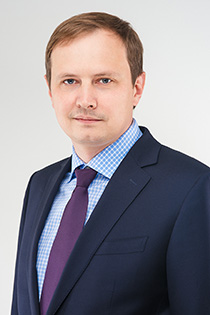

ПРОФЕССИОНАЛИЗМ
Адвокат, Управляющий партнер
Регистрационный номер в реестре адвокатов: 66/1978
Мы специализированное Адвокатское бюро Свердловской области города Екатеринбурга. Объединяя специалистов разных направлений, мы с уверенностью гарантируем Вам профессионализм, результат и надежность. Адвокатское бюро «Бабиков и Партнеры» уже много лет успешно осуществляет адвокатскую деятельность.
Успешно осуществляя адвокатскую деятельность уже более 10 лет, мы внимательно относимся к вопросу подбора членов нашей команды, в первую очередь делая ставку на опыт, который приходит лишь после нескольких лет практики. И обращаясь за помощью именно к нам, Вы можете быть уверены, что сделали правильный выбор: ведь решением Вашей проблемы займутся высококвалифицированные адвокаты города Екатеринбурга.
Специализация:
- защита по уголовным делам в сфере экономической деятельности.
- представительство в арбитражных судах, в судах общей юрисдикции по гражданским делам, хозяйственным, налоговым и корпоративным спорам.
- представительство по делам о банкротстве.
Окончил: Институт внешнеэкономических отношений и права Уральской государственной юридической академии в 2003 году. Общий юридический стаж: с 2001 года. Стаж работы в статусе адвоката: с 2003 года.
Повышение квалификации адвоката:
2010 год – в Адвокатской палате Свердловской области.
2015 год – в Российской правовой академии Министерства юстиции Российской Федерации.
2015 год – в Некоммерческом образовательном учреждении Учебно-методическом центре «Градиент Альфа» по программе «Обязательственное право: общие положения».
Награжден:
Сертификаты:
Сертификат о повышении квалификации № 014074
Удостоверение о краткосрочном повышении квалификации РН № 002
Удостоверение о краткосрочном повышении квалификации РН № 222